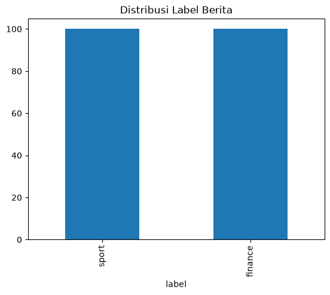
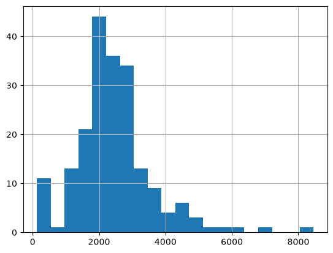
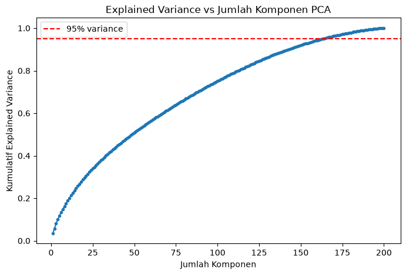
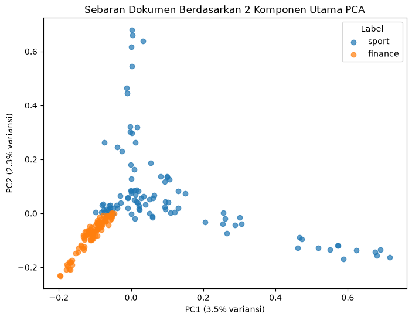

1. Data Understanding#
Data Understanding adalah tahap awal dalam proses data mining/NLP untuk memahami karakteristik dataset sebelum masuk ke preprocessing. Tujuannya:
Mengetahui struktur data (jumlah baris, kolom, tipe data)
Mengetahui kualitas data (missing value, duplikat)
Mengetahui distribusi label/kelas (seimbang atau tidak)
Mengetahui karakteristik teks (panjang, noise, pola penulisan)
Tahap ini penting karena keputusan di tahap preprocessing (cleaning, stopword, stemming) akan ditentukan dari temuan di sini.
import pandas as pd
df = pd.read_csv('dataset_berita.csv')
df.head()
---------------------------------------------------------------------------
FileNotFoundError Traceback (most recent call last)
Cell In[1], line 3
1 import pandas as pd
----> 3 df = pd.read_csv('dataset_berita.csv')
4 df.head()
File ~\AppData\Local\Programs\Python\Python311\Lib\site-packages\pandas\io\parsers\readers.py:1026, in read_csv(filepath_or_buffer, sep, delimiter, header, names, index_col, usecols, dtype, engine, converters, true_values, false_values, skipinitialspace, skiprows, skipfooter, nrows, na_values, keep_default_na, na_filter, verbose, skip_blank_lines, parse_dates, infer_datetime_format, keep_date_col, date_parser, date_format, dayfirst, cache_dates, iterator, chunksize, compression, thousands, decimal, lineterminator, quotechar, quoting, doublequote, escapechar, comment, encoding, encoding_errors, dialect, on_bad_lines, delim_whitespace, low_memory, memory_map, float_precision, storage_options, dtype_backend)
1013 kwds_defaults = _refine_defaults_read(
1014 dialect,
1015 delimiter,
(...) 1022 dtype_backend=dtype_backend,
1023 )
1024 kwds.update(kwds_defaults)
-> 1026 return _read(filepath_or_buffer, kwds)
File ~\AppData\Local\Programs\Python\Python311\Lib\site-packages\pandas\io\parsers\readers.py:620, in _read(filepath_or_buffer, kwds)
617 _validate_names(kwds.get("names", None))
619 # Create the parser.
--> 620 parser = TextFileReader(filepath_or_buffer, **kwds)
622 if chunksize or iterator:
623 return parser
File ~\AppData\Local\Programs\Python\Python311\Lib\site-packages\pandas\io\parsers\readers.py:1620, in TextFileReader.__init__(self, f, engine, **kwds)
1617 self.options["has_index_names"] = kwds["has_index_names"]
1619 self.handles: IOHandles | None = None
-> 1620 self._engine = self._make_engine(f, self.engine)
File ~\AppData\Local\Programs\Python\Python311\Lib\site-packages\pandas\io\parsers\readers.py:1880, in TextFileReader._make_engine(self, f, engine)
1878 if "b" not in mode:
1879 mode += "b"
-> 1880 self.handles = get_handle(
1881 f,
1882 mode,
1883 encoding=self.options.get("encoding", None),
1884 compression=self.options.get("compression", None),
1885 memory_map=self.options.get("memory_map", False),
1886 is_text=is_text,
1887 errors=self.options.get("encoding_errors", "strict"),
1888 storage_options=self.options.get("storage_options", None),
1889 )
1890 assert self.handles is not None
1891 f = self.handles.handle
File ~\AppData\Local\Programs\Python\Python311\Lib\site-packages\pandas\io\common.py:873, in get_handle(path_or_buf, mode, encoding, compression, memory_map, is_text, errors, storage_options)
868 elif isinstance(handle, str):
869 # Check whether the filename is to be opened in binary mode.
870 # Binary mode does not support 'encoding' and 'newline'.
871 if ioargs.encoding and "b" not in ioargs.mode:
872 # Encoding
--> 873 handle = open(
874 handle,
875 ioargs.mode,
876 encoding=ioargs.encoding,
877 errors=errors,
878 newline="",
879 )
880 else:
881 # Binary mode
882 handle = open(handle, ioargs.mode)
FileNotFoundError: [Errno 2] No such file or directory: 'dataset_berita.csv'
1.1 Struktur Dataset#
Mengecek jumlah baris (dokumen berita), jumlah kolom, serta tipe data tiap kolom.
Ini untuk memastikan kolom teks (isi_berita) dan kolom label (label) terbaca
dengan tipe data yang benar (string/object), bukan numerik atau tipe lain yang
bisa mengganggu proses selanjutnya.
print("Jumlah baris & kolom:", df.shape)
print("\nTipe data tiap kolom:")
print(df.dtypes)
print("\nInfo lengkap:")
df.info()
Jumlah baris & kolom: (200, 3)
Tipe data tiap kolom:
id int64
isi_berita object
label object
dtype: object
Info lengkap:
<class 'pandas.core.frame.DataFrame'>
RangeIndex: 200 entries, 0 to 199
Data columns (total 3 columns):
# Column Non-Null Count Dtype
--- ------ -------------- -----
0 id 200 non-null int64
1 isi_berita 200 non-null object
2 label 200 non-null object
dtypes: int64(1), object(2)
memory usage: 4.8+ KB
1.2 Kualitas Data: Missing Value & Duplikat#
Mengecek apakah ada data kosong (missing value) pada kolom teks atau label, serta apakah ada berita yang terduplikasi. Data yang mengandung missing value atau duplikat perlu ditangani (dihapus/diisi) sebelum lanjut ke preprocessing, karena bisa menyebabkan bias atau error di tahap ekstraksi fitur.
print("Missing value per kolom:")
print(df.isnull().sum())
print("\nJumlah baris duplikat (berdasarkan isi_berita):", df.duplicated(subset=['isi_berita']).sum())
Missing value per kolom:
id 0
isi_berita 0
label 0
dtype: int64
Jumlah baris duplikat (berdasarkan isi_berita): 0
1.3 Distribusi Label#
Mengecek jumlah dokumen pada tiap kelas/label (sport dan finance). Distribusi
label penting diketahui di awal karena:
Jika seimbang → tidak perlu teknik balancing (SMOTE, undersampling, dll) nanti saat modeling
Jika tidak seimbang → perlu penanganan khusus agar model tidak bias ke kelas mayoritas
print("Distribusi label:")
print(df['label'].value_counts())
df['label'].value_counts().plot(kind='bar', title='Distribusi Label Berita')
Distribusi label:
label
sport 100
finance 100
Name: count, dtype: int64
<Axes: title={'center': 'Distribusi Label Berita'}, xlabel='label'>

1.4 Statistik Panjang Teks#
Mengecek panjang (jumlah karakter) tiap dokumen berita: nilai minimum, maksimum, rata-rata, dan sebarannya. Ini berguna untuk:
Mendeteksi outlier (berita yang terlalu pendek/kosong secara efektif, atau terlalu panjang yang mungkin gabungan beberapa artikel)
Memberi gambaran awal beban komputasi di tahap tokenizing dan stemming nanti
df['panjang_teks'] = df['isi_berita'].str.len()
print(df['panjang_teks'].describe())
df['panjang_teks'].hist(bins=20)
count 200.000000
mean 2442.480000
std 1172.939853
min 130.000000
25% 1836.000000
50% 2333.000000
75% 2902.000000
max 8456.000000
Name: panjang_teks, dtype: float64
<Axes: >

1.5 Inspeksi Konten (Cek Noise Hasil Crawling)#
Melihat langsung contoh isi berita per label untuk mengecek pola-pola noise yang biasanya ikut terambil saat crawling, seperti kata “ADVERTISEMENT”, “SCROLL TO CONTINUE WITH CONTENT”, frasa “Baca juga: …”, atau karakter kutip ganda dari escaping CSV. Temuan di sini akan jadi acuan aturan apa saja yang perlu dibersihkan di tahap Data Cleaning selanjutnya.
for label in df['label'].unique():
print(f"\n=== Contoh berita label: {label} ===")
print(df[df['label'] == label]['isi_berita'].iloc[0][:500])
print("...")
=== Contoh berita label: sport ===
Jakarta - Putri Kusuma Wardani percaya diri dengan komposisi beregu putri yang dipilih PBSI untuk Asian Games 2026. Dia juga menyebut chemistry satu sama lain sudah klop. Bulutangkis Indonesia mengirimkan 20 wakil untuk tampil di Aichi-Nagoya, 19 September hingga 4 Oktober mendatang. 10 Atlet di antaranya merupakan sektor beregu putri. Yaitu Putri KW, Thalita R. Wiryawan, Ni Kadek Dhinda, Mutiara Ayu Puspitasari, Rachel Allessya Rose, Febi Setianingrum, Febriana Dwipuji Kusuma, Meilysa Trias Pus
...
=== Contoh berita label: finance ===
Jakarta - Penutupan operasional Bandara Soekarno-Hatta beserta sejumlah bandara lain yang terkena dampak abu vulkanik Gunung Anak Krakatau telah berakhir. Mulai Selasa (8/9) pukul 00.01 WIB, operasional bandara kembali berjalan dengan normal. Menteri Perhubungan Dudy Purwagandhi secara langsung menyatakan pembukaan kembali operasional bandara dari Terminal 1 Bandara Soekarno-Hatta, Selasa dini hari (8/9). Sementara bandara Bandara Radin Inten II Lampung serta Bandara Muhammad Taufiq Kiemas Lampu
...
%pip install Sastrawi nltk
Collecting Sastrawi
Using cached Sastrawi-1.0.1-py2.py3-none-any.whl.metadata (909 bytes)
Collecting nltk
Using cached nltk-3.10.3-py3-none-any.whl.metadata (3.2 kB)
Collecting defusedxml (from nltk)
Using cached defusedxml-0.7.1-py2.py3-none-any.whl.metadata (32 kB)
Requirement already satisfied: click in c:\users\acer\appdata\local\programs\python\python311\lib\site-packages (from nltk) (8.1.7)
Collecting joblib (from nltk)
Downloading joblib-1.6.0-py3-none-any.whl.metadata (6.5 kB)
Collecting regex>=2021.8.3 (from nltk)
Downloading regex-2026.9.10-cp311-cp311-win_amd64.whl.metadata (41 kB)
Collecting tqdm (from nltk)
Downloading tqdm-4.70.1-py3-none-any.whl.metadata (57 kB)
Requirement already satisfied: colorama in c:\users\acer\appdata\local\programs\python\python311\lib\site-packages (from click->nltk) (0.4.6)
Collecting cloudpickle>=3.0 (from joblib->nltk)
Downloading cloudpickle-3.1.2-py3-none-any.whl.metadata (7.1 kB)
Using cached Sastrawi-1.0.1-py2.py3-none-any.whl (209 kB)
Using cached nltk-3.10.3-py3-none-any.whl (1.8 MB)
Downloading regex-2026.9.10-cp311-cp311-win_amd64.whl (278 kB)
Using cached defusedxml-0.7.1-py2.py3-none-any.whl (25 kB)
Downloading joblib-1.6.0-py3-none-any.whl (306 kB)
Downloading tqdm-4.70.1-py3-none-any.whl (80 kB)
Downloading cloudpickle-3.1.2-py3-none-any.whl (22 kB)
Installing collected packages: Sastrawi, tqdm, regex, defusedxml, cloudpickle, joblib, nltk
Successfully installed Sastrawi-1.0.1 cloudpickle-3.1.2 defusedxml-0.7.1 joblib-1.6.0 nltk-3.10.3 regex-2026.9.10 tqdm-4.70.1
Note: you may need to restart the kernel to use updated packages.
[notice] A new release of pip is available: 24.2 -> 26.2.1
[notice] To update, run: python.exe -m pip install --upgrade pip
2. Data Cleaning & Preprocessing#
Setelah memahami karakteristik data di tahap sebelumnya, tahap ini bertujuan membersihkan dan menyeragamkan teks berita agar siap diubah menjadi fitur numerik (TF-IDF). Tanpa tahap ini, noise (iklan, tag crawling, tanda baca, kata umum) akan ikut masuk ke vocabulary dan mengganggu kualitas representasi teks.
Urutan proses:
Noise Removal — hapus elemen sisa crawling
Case Folding — ubah ke huruf kecil
Cleansing — hapus angka & tanda baca
Tokenizing — pecah jadi kata per kata
Stopword Removal — hapus kata umum tidak bermakna
Stemming — ubah kata berimbuhan ke bentuk dasar
2.1 Noise Removal#
Berdasarkan temuan di Data Understanding (Cell 6), dataset ini mengandung noise khas hasil crawling seperti:
"SCROLL TO CONTINUE WITH CONTENT""ADVERTISEMENT"Pola
"Baca juga: ..."(biasanya berupa judul artikel lain, bukan isi berita utama)Karakter kutip ganda berlebih (
""kata"") akibat escaping saat proses scraping ke CSV
Noise ini dihapus menggunakan regex sebelum masuk ke tahap cleaning berikutnya, supaya tidak dianggap sebagai kata bermakna oleh model.
import re
def remove_noise(text):
# Hapus frasa noise spesifik hasil crawling
text = re.sub(r'SCROLL TO CONTINUE WITH CONTENT', ' ', text)
text = re.sub(r'ADVERTISEMENT', ' ', text)
# Hapus pola "Baca juga: ..." sampai tanda baca akhir kalimat berikutnya
text = re.sub(r'Baca juga\s*:.*?(?=\.\s|\n|$)', ' ', text)
# Rapikan kutip ganda berlebih dari escaping CSV
text = text.replace('""', '"')
return text
df['clean_text'] = df['isi_berita'].apply(remove_noise)
df[['isi_berita', 'clean_text']].head(2)
| isi_berita | clean_text | |
|---|---|---|
| 0 | Jakarta - Putri Kusuma Wardani percaya diri de... | Jakarta - Putri Kusuma Wardani percaya diri de... |
| 1 | Jakarta - Mata Derrick Michael Xzavierro berbi... | Jakarta - Mata Derrick Michael Xzavierro berbi... |
2.2 Case Folding & Cleansing#
Case folding: mengubah semua huruf menjadi huruf kecil, supaya kata yang sama tapi beda kapitalisasi (mis. “Jakarta” dan “jakarta”) dihitung sebagai kata yang sama.
Cleansing: menghapus angka, tanda baca, dan karakter selain huruf, karena umumnya tidak berkontribusi signifikan terhadap makna kategori berita (sport vs finance) dalam pendekatan bag-of-words/TF-IDF standar.
def case_folding_cleansing(text):
text = text.lower() # huruf kecil semua
text = re.sub(r'[^a-z\s]', ' ', text) # hapus angka & tanda baca
text = re.sub(r'\s+', ' ', text).strip() # rapikan spasi berlebih
return text
df['clean_text'] = df['clean_text'].apply(case_folding_cleansing)
df[['isi_berita', 'clean_text']].head(2)
| isi_berita | clean_text | |
|---|---|---|
| 0 | Jakarta - Putri Kusuma Wardani percaya diri de... | jakarta putri kusuma wardani percaya diri deng... |
| 1 | Jakarta - Mata Derrick Michael Xzavierro berbi... | jakarta mata derrick michael xzavierro berbina... |
2.3 Tokenizing#
Memecah setiap dokumen berita menjadi daftar kata (token). Ini adalah langkah persiapan sebelum stopword removal dan stemming, karena kedua proses tersebut bekerja per kata, bukan per kalimat/dokumen utuh.
df['tokens'] = df['clean_text'].apply(lambda x: x.split())
df[['clean_text', 'tokens']].head(2)
| clean_text | tokens | |
|---|---|---|
| 0 | jakarta putri kusuma wardani percaya diri deng... | [jakarta, putri, kusuma, wardani, percaya, dir... |
| 1 | jakarta mata derrick michael xzavierro berbina... | [jakarta, mata, derrick, michael, xzavierro, b... |
2.4 Stopword Removal#
Menghapus kata-kata umum Bahasa Indonesia yang sering muncul di hampir semua dokumen tapi tidak membawa informasi pembeda antar kategori, misalnya “yang”, “di”, “dan”, “ke”, “dari”. Menggunakan library Sastrawi yang memang dibuat khusus untuk Bahasa Indonesia.
from Sastrawi.StopWordRemover.StopWordRemoverFactory import StopWordRemoverFactory
stopword_factory = StopWordRemoverFactory()
stopwords = set(stopword_factory.get_stop_words())
def remove_stopwords(tokens):
return [word for word in tokens if word not in stopwords]
df['tokens_no_stopwords'] = df['tokens'].apply(remove_stopwords)
df[['tokens', 'tokens_no_stopwords']].head(2)
| tokens | tokens_no_stopwords | |
|---|---|---|
| 0 | [jakarta, putri, kusuma, wardani, percaya, dir... | [jakarta, putri, kusuma, wardani, percaya, dir... |
| 1 | [jakarta, mata, derrick, michael, xzavierro, b... | [jakarta, mata, derrick, michael, xzavierro, b... |
2.5 Stemming#
Mengubah kata berimbuhan menjadi kata dasarnya, misalnya “bertanding” → “tanding”, “kekuatan” → “kuat”. Tujuannya agar variasi bentuk kata dari akar yang sama dihitung sebagai satu fitur yang sama saat ekstraksi fitur nanti.
Catatan: proses ini cukup berat secara komputasi untuk 200 dokumen panjang, jadi mungkin butuh waktu beberapa menit untuk selesai.
from Sastrawi.Stemmer.StemmerFactory import StemmerFactory
stemmer_factory = StemmerFactory()
stemmer = stemmer_factory.create_stemmer()
def stem_tokens(tokens):
return [stemmer.stem(word) for word in tokens]
df['tokens_stemmed'] = df['tokens_no_stopwords'].apply(stem_tokens)
df[['tokens_no_stopwords', 'tokens_stemmed']].head(2)
| tokens_no_stopwords | tokens_stemmed | |
|---|---|---|
| 0 | [jakarta, putri, kusuma, wardani, percaya, dir... | [jakarta, putri, kusuma, wardani, percaya, dir... |
| 1 | [jakarta, mata, derrick, michael, xzavierro, b... | [jakarta, mata, derrick, michael, xzavierro, b... |
2.6 Gabungkan Kembali Token Menjadi Teks Bersih#
Setelah semua kata melalui stopword removal dan stemming, token-token tersebut
digabungkan kembali menjadi satu string per dokumen. Format ini yang nantinya
menjadi input untuk TfidfVectorizer di tahap Ekstraksi Fitur & Representasi TF-IDF.
df['final_text'] = df['tokens_stemmed'].apply(lambda tokens: ' '.join(tokens))
df[['isi_berita', 'final_text']].head(3)
| isi_berita | final_text | |
|---|---|---|
| 0 | Jakarta - Putri Kusuma Wardani percaya diri de... | jakarta putri kusuma wardani percaya diri komp... |
| 1 | Jakarta - Mata Derrick Michael Xzavierro berbi... | jakarta mata derrick michael xzavierro binar b... |
| 2 | Jakarta - Marc Marquez masih harus beradaptasi... | jakarta marc marquez adaptasi kondisi lengan k... |
2.7 Cek Hasil Preprocessing#
Membandingkan teks asli dengan teks hasil preprocessing secara utuh untuk satu sampel dokumen, sebagai validasi manual bahwa proses cleaning, stopword removal, dan stemming sudah berjalan sesuai harapan sebelum lanjut ke tahap ekstraksi fitur.
print("=== TEKS ASLI ===")
print(df['isi_berita'].iloc[0][:500])
print("\n=== TEKS SETELAH PREPROCESSING ===")
print(df['final_text'].iloc[0][:500])
=== TEKS ASLI ===
Jakarta - Putri Kusuma Wardani percaya diri dengan komposisi beregu putri yang dipilih PBSI untuk Asian Games 2026. Dia juga menyebut chemistry satu sama lain sudah klop. Bulutangkis Indonesia mengirimkan 20 wakil untuk tampil di Aichi-Nagoya, 19 September hingga 4 Oktober mendatang. 10 Atlet di antaranya merupakan sektor beregu putri. Yaitu Putri KW, Thalita R. Wiryawan, Ni Kadek Dhinda, Mutiara Ayu Puspitasari, Rachel Allessya Rose, Febi Setianingrum, Febriana Dwipuji Kusuma, Meilysa Trias Pus
=== TEKS SETELAH PREPROCESSING ===
jakarta putri kusuma wardani percaya diri komposisi regu putri pilih pbsi asi games sebut chemistry satu sama klop bulutangkis indonesia kirim wakil tampil aichi nagoya september hingga oktober datang atlet antara rupa sektor regu putri putri kw thalita r wiryawan ni kadek dhinda mutiara ayu puspitasari rachel allessya rose febi setianingrum febriana dwipuji kusuma meilysa trias puspitasari siti fadia silva ramadhanti nita violina marwah alam laga sama beberapa juara regu belum nilai bentuk komp
3. Ekstraksi Fitur & Representasi Teks#
Setelah teks melalui tahap preprocessing (cleaning, stopword removal, stemming), langkah berikutnya adalah mengubah teks menjadi representasi numerik agar bisa diproses oleh algoritma machine learning. Tahap ini terdiri dari:
Membentuk vocabulary (kumpulan seluruh kata unik) dari seluruh dokumen (
final_text)Merepresentasikan dokumen dalam Binary Document-Term Matrix
Merepresentasikan dokumen dalam Term Frequency Matrix (Bag of Words)
Merepresentasikan dokumen dalam TF-IDF Matrix
Ketiga matriks (Binary, BoW, TF-IDF) dibangun menggunakan vocabulary yang sama
agar kolom-kolom antar tabel bisa dibandingkan secara konsisten. Kolom label
disimpan terpisah dan tidak diikutsertakan sebagai fitur teks.
%pip install scikit-learn
Collecting scikit-learn
Downloading scikit_learn-1.9.1-cp311-cp311-win_amd64.whl.metadata (9.3 kB)
Requirement already satisfied: numpy>=1.24.1 in c:\users\acer\appdata\local\programs\python\python311\lib\site-packages (from scikit-learn) (2.2.4)
Requirement already satisfied: scipy>=1.10.0 in c:\users\acer\appdata\local\programs\python\python311\lib\site-packages (from scikit-learn) (1.15.2)
Requirement already satisfied: joblib>=1.4.0 in c:\users\acer\appdata\local\programs\python\python311\lib\site-packages (from scikit-learn) (1.6.0)
Collecting narwhals>=2.0.1 (from scikit-learn)
Downloading narwhals-2.26.0-py3-none-any.whl.metadata (15 kB)
Requirement already satisfied: threadpoolctl>=3.5.0 in c:\users\acer\appdata\local\programs\python\python311\lib\site-packages (from scikit-learn) (3.6.0)
Requirement already satisfied: cloudpickle>=3.0 in c:\users\acer\appdata\local\programs\python\python311\lib\site-packages (from joblib>=1.4.0->scikit-learn) (3.1.2)
Downloading scikit_learn-1.9.1-cp311-cp311-win_amd64.whl (8.3 MB)
---------------------------------------- 0.0/8.3 MB ? eta -:--:--
-- ------------------------------------- 0.5/8.3 MB 3.4 MB/s eta 0:00:03
----- ---------------------------------- 1.0/8.3 MB 2.8 MB/s eta 0:00:03
------ --------------------------------- 1.3/8.3 MB 2.6 MB/s eta 0:00:03
-------- ------------------------------- 1.8/8.3 MB 2.4 MB/s eta 0:00:03
----------- ---------------------------- 2.4/8.3 MB 2.4 MB/s eta 0:00:03
------------- -------------------------- 2.9/8.3 MB 2.5 MB/s eta 0:00:03
----------------- ---------------------- 3.7/8.3 MB 2.6 MB/s eta 0:00:02
-------------------- ------------------- 4.2/8.3 MB 2.5 MB/s eta 0:00:02
---------------------- ----------------- 4.7/8.3 MB 2.6 MB/s eta 0:00:02
-------------------------- ------------- 5.5/8.3 MB 2.7 MB/s eta 0:00:02
------------------------------ --------- 6.3/8.3 MB 2.8 MB/s eta 0:00:01
----------------------------------- ---- 7.3/8.3 MB 2.9 MB/s eta 0:00:01
---------------------------------------- 8.3/8.3 MB 3.1 MB/s eta 0:00:00
Downloading narwhals-2.26.0-py3-none-any.whl (474 kB)
Installing collected packages: narwhals, scikit-learn
Successfully installed narwhals-2.26.0 scikit-learn-1.9.1
Note: you may need to restart the kernel to use updated packages.
[notice] A new release of pip is available: 24.2 -> 26.2.1
[notice] To update, run: python.exe -m pip install --upgrade pip
from sklearn.feature_extraction.text import CountVectorizer, TfidfVectorizer
# Fit CountVectorizer untuk mendapatkan vocabulary dari seluruh dokumen
count_vectorizer = CountVectorizer()
count_vectorizer.fit(df['final_text'])
vocabulary = count_vectorizer.get_feature_names_out()
print("Jumlah kata unik (vocabulary size):", len(vocabulary))
print("\nContoh 20 kata pertama dalam vocabulary:")
print(vocabulary[:20])
Jumlah kata unik (vocabulary size): 4971
Contoh 20 kata pertama dalam vocabulary:
['aadi' 'aan' 'aarhus' 'abad' 'abadi' 'abai' 'abal' 'abang' 'abdul'
'abdullah' 'abis' 'abraham' 'absen' 'abu' 'ac' 'acara' 'acau' 'access'
'account' 'accurate']
3.2 Pembuatan Tabel 1: Binary Document-Term Matrix#
Binary Document-Term Matrix menunjukkan apakah sebuah kata muncul dalam sebuah dokumen. Setiap baris mewakili satu artikel, sedangkan setiap kolom mewakili satu kata unik. Nilai yang digunakan hanya:
1: kata muncul setidaknya satu kali dalam dokumen;0: kata tidak muncul dalam dokumen.
Representasi biner mengabaikan jumlah kemunculan kata. Karena itu, dua dokumen yang
memuat kata yang sama tetap memiliki nilai yang sama meskipun frekuensinya berbeda.
Kolom label disimpan terpisah sebagai target kategori dan bukan sebagai fitur teks.
# Binary Document-Term Matrix, pakai vocabulary yang sama dengan count_vectorizer
binary_vectorizer = CountVectorizer(vocabulary=count_vectorizer.vocabulary_, binary=True)
binary_matrix = binary_vectorizer.fit_transform(df['final_text'])
df_binary = pd.DataFrame(
binary_matrix.toarray(),
columns=binary_vectorizer.get_feature_names_out()
)
df_binary['label'] = df['label'].values
print("Ukuran Binary Document-Term Matrix:", df_binary.shape)
df_binary.head()
Ukuran Binary Document-Term Matrix: (200, 4972)
| aadi | aan | aarhus | abad | abadi | abai | abal | abang | abdul | abdullah | ... | zaki | zamorano | zapp | zero | zona | zoom | zuhair | zulhas | zulkifli | label | |
|---|---|---|---|---|---|---|---|---|---|---|---|---|---|---|---|---|---|---|---|---|---|
| 0 | 0 | 0 | 0 | 0 | 0 | 0 | 0 | 0 | 0 | 0 | ... | 0 | 0 | 0 | 0 | 0 | 0 | 0 | 0 | 0 | sport |
| 1 | 0 | 0 | 0 | 0 | 0 | 0 | 0 | 0 | 0 | 0 | ... | 0 | 0 | 0 | 0 | 0 | 0 | 0 | 0 | 0 | sport |
| 2 | 0 | 0 | 0 | 0 | 0 | 0 | 0 | 0 | 0 | 0 | ... | 0 | 0 | 0 | 0 | 0 | 0 | 0 | 0 | 0 | sport |
| 3 | 0 | 0 | 0 | 0 | 0 | 0 | 0 | 0 | 0 | 0 | ... | 0 | 0 | 0 | 0 | 0 | 0 | 0 | 0 | 0 | sport |
| 4 | 0 | 0 | 0 | 0 | 0 | 0 | 0 | 0 | 0 | 0 | ... | 0 | 0 | 0 | 0 | 0 | 0 | 0 | 0 | 0 | sport |
5 rows × 4972 columns
3.3 Pembuatan Tabel 2: Term Frequency Matrix / Bag of Words#
Bag of Words merepresentasikan dokumen berdasarkan jumlah kemunculan setiap kata.
Berbeda dari matriks biner, nilai pada tabel ini dapat lebih besar dari satu.
Misalnya, jika sebuah kata muncul tiga kali dalam satu artikel, maka nilai fitur
kata tersebut adalah 3.
Metode ini sederhana dan dapat menangkap intensitas penggunaan kata, tetapi belum mempertimbangkan apakah kata tersebut juga sering muncul pada banyak dokumen lain. Matriks hasil pemrosesan teks biasanya memiliki banyak nilai nol sehingga secara konsep termasuk matriks berdimensi tinggi dan bersifat sparse.
# Term Frequency Matrix (Bag of Words) menggunakan vocabulary yang sama
bow_matrix = count_vectorizer.transform(df['final_text'])
df_bow = pd.DataFrame(
bow_matrix.toarray(),
columns=count_vectorizer.get_feature_names_out()
)
df_bow['label'] = df['label'].values
print("Ukuran Bag of Words Matrix:", df_bow.shape)
print("Tingkat sparsity: {:.2f}%".format(
100 * (1 - bow_matrix.nnz / (bow_matrix.shape[0] * bow_matrix.shape[1]))
))
df_bow.head()
Ukuran Bag of Words Matrix: (200, 4972)
Tingkat sparsity: 97.58%
| aadi | aan | aarhus | abad | abadi | abai | abal | abang | abdul | abdullah | ... | zaki | zamorano | zapp | zero | zona | zoom | zuhair | zulhas | zulkifli | label | |
|---|---|---|---|---|---|---|---|---|---|---|---|---|---|---|---|---|---|---|---|---|---|
| 0 | 0 | 0 | 0 | 0 | 0 | 0 | 0 | 0 | 0 | 0 | ... | 0 | 0 | 0 | 0 | 0 | 0 | 0 | 0 | 0 | sport |
| 1 | 0 | 0 | 0 | 0 | 0 | 0 | 0 | 0 | 0 | 0 | ... | 0 | 0 | 0 | 0 | 0 | 0 | 0 | 0 | 0 | sport |
| 2 | 0 | 0 | 0 | 0 | 0 | 0 | 0 | 0 | 0 | 0 | ... | 0 | 0 | 0 | 0 | 0 | 0 | 0 | 0 | 0 | sport |
| 3 | 0 | 0 | 0 | 0 | 0 | 0 | 0 | 0 | 0 | 0 | ... | 0 | 0 | 0 | 0 | 0 | 0 | 0 | 0 | 0 | sport |
| 4 | 0 | 0 | 0 | 0 | 0 | 0 | 0 | 0 | 0 | 0 | ... | 0 | 0 | 0 | 0 | 0 | 0 | 0 | 0 | 0 | sport |
5 rows × 4972 columns
3.4 Pembuatan Tabel 3: TF-IDF Matrix#
TF-IDF (Term Frequency–Inverse Document Frequency) menyempurnakan Bag of Words dengan mempertimbangkan seberapa penting sebuah kata terhadap suatu dokumen, relatif terhadap keseluruhan korpus. Kata yang sering muncul di satu dokumen tapi jarang muncul di dokumen lain akan mendapat bobot tinggi, sedangkan kata yang muncul di hampir semua dokumen (misalnya kata umum yang lolos dari stopword removal) akan mendapat bobot rendah.
Rumus dasarnya:
TF-IDF(t, d) = TF(t, d) × IDF(t)
di mana TF(t, d) adalah frekuensi kata t pada dokumen d, dan IDF(t) mengukur
seberapa jarang kata t muncul di seluruh dokumen dalam korpus.
# TF-IDF Matrix, pakai vocabulary yang sama agar konsisten dengan tabel sebelumnya
tfidf_vectorizer = TfidfVectorizer(vocabulary=count_vectorizer.vocabulary_)
tfidf_matrix = tfidf_vectorizer.fit_transform(df['final_text'])
df_tfidf = pd.DataFrame(
tfidf_matrix.toarray(),
columns=tfidf_vectorizer.get_feature_names_out()
)
df_tfidf['label'] = df['label'].values
print("Ukuran TF-IDF Matrix:", df_tfidf.shape)
df_tfidf.head()
Ukuran TF-IDF Matrix: (200, 4972)
| aadi | aan | aarhus | abad | abadi | abai | abal | abang | abdul | abdullah | ... | zaki | zamorano | zapp | zero | zona | zoom | zuhair | zulhas | zulkifli | label | |
|---|---|---|---|---|---|---|---|---|---|---|---|---|---|---|---|---|---|---|---|---|---|
| 0 | 0.0 | 0.0 | 0.0 | 0.0 | 0.0 | 0.0 | 0.0 | 0.0 | 0.0 | 0.0 | ... | 0.0 | 0.0 | 0.0 | 0.0 | 0.0 | 0.0 | 0.0 | 0.0 | 0.0 | sport |
| 1 | 0.0 | 0.0 | 0.0 | 0.0 | 0.0 | 0.0 | 0.0 | 0.0 | 0.0 | 0.0 | ... | 0.0 | 0.0 | 0.0 | 0.0 | 0.0 | 0.0 | 0.0 | 0.0 | 0.0 | sport |
| 2 | 0.0 | 0.0 | 0.0 | 0.0 | 0.0 | 0.0 | 0.0 | 0.0 | 0.0 | 0.0 | ... | 0.0 | 0.0 | 0.0 | 0.0 | 0.0 | 0.0 | 0.0 | 0.0 | 0.0 | sport |
| 3 | 0.0 | 0.0 | 0.0 | 0.0 | 0.0 | 0.0 | 0.0 | 0.0 | 0.0 | 0.0 | ... | 0.0 | 0.0 | 0.0 | 0.0 | 0.0 | 0.0 | 0.0 | 0.0 | 0.0 | sport |
| 4 | 0.0 | 0.0 | 0.0 | 0.0 | 0.0 | 0.0 | 0.0 | 0.0 | 0.0 | 0.0 | ... | 0.0 | 0.0 | 0.0 | 0.0 | 0.0 | 0.0 | 0.0 | 0.0 | 0.0 | sport |
5 rows × 4972 columns
Verifikasi: Matriks Tidak Nol Semua (hanya sparse)#
Karena vocabulary disusun alfabetis, kolom-kolom pertama sering berisi kata-kata langka yang wajar tidak muncul di beberapa dokumen pertama — bukan berarti matriksnya kosong. Berikut verifikasi total kemunculan kata dan tampilan yang lebih representatif menggunakan kata-kata yang paling sering muncul.
# 1. Verifikasi bahwa matriks TIDAK nol semua
print("Total nilai 1 di Binary Matrix :", df_binary.drop(columns=['label']).values.sum())
print("Total kemunculan kata di BoW Matrix:", df_bow.drop(columns=['label']).values.sum())
print("Total nilai TF-IDF (non-zero) :", (df_tfidf.drop(columns=['label']).values > 0).sum())
# 2. Cari kata yang paling sering muncul (biar tampilannya ga alfabetis & kosong)
word_freq = df_bow.drop(columns=['label']).sum().sort_values(ascending=False)
top_words = word_freq.head(10).index.tolist()
print("\n10 kata dengan frekuensi tertinggi:")
print(word_freq.head(10))
print("\nContoh Binary Matrix untuk kata-kata yang sering muncul:")
display(df_binary[top_words + ['label']].head())
print("\nContoh BoW Matrix untuk kata-kata yang sering muncul:")
display(df_bow[top_words + ['label']].head())
print("\nContoh TF-IDF Matrix untuk kata-kata yang sering muncul:")
display(df_tfidf[top_words + ['label']].head())
Total nilai 1 di Binary Matrix : 24080
Total kemunculan kata di BoW Matrix: 44222
Total nilai TF-IDF (non-zero) : 24080
10 kata dengan frekuensi tertinggi:
jadi 488
sebut 364
indonesia 339
jakarta 313
laku 217
lebih 204
rp 203
hingga 193
sama 183
kata 176
dtype: int64
Contoh Binary Matrix untuk kata-kata yang sering muncul:
| jadi | sebut | indonesia | jakarta | laku | lebih | rp | hingga | sama | kata | label | |
|---|---|---|---|---|---|---|---|---|---|---|---|
| 0 | 1 | 1 | 1 | 1 | 0 | 1 | 0 | 1 | 1 | 1 | sport |
| 1 | 1 | 0 | 1 | 1 | 1 | 0 | 0 | 0 | 0 | 1 | sport |
| 2 | 1 | 1 | 1 | 1 | 1 | 0 | 0 | 0 | 1 | 1 | sport |
| 3 | 1 | 0 | 1 | 1 | 0 | 1 | 0 | 1 | 0 | 1 | sport |
| 4 | 1 | 1 | 1 | 1 | 0 | 0 | 0 | 0 | 0 | 0 | sport |
Contoh BoW Matrix untuk kata-kata yang sering muncul:
| jadi | sebut | indonesia | jakarta | laku | lebih | rp | hingga | sama | kata | label | |
|---|---|---|---|---|---|---|---|---|---|---|---|
| 0 | 1 | 1 | 3 | 1 | 0 | 2 | 0 | 2 | 4 | 1 | sport |
| 1 | 3 | 0 | 3 | 4 | 1 | 0 | 0 | 0 | 0 | 2 | sport |
| 2 | 1 | 3 | 2 | 1 | 1 | 0 | 0 | 0 | 2 | 1 | sport |
| 3 | 3 | 0 | 2 | 1 | 0 | 1 | 0 | 1 | 0 | 2 | sport |
| 4 | 1 | 2 | 1 | 1 | 0 | 0 | 0 | 0 | 0 | 0 | sport |
Contoh TF-IDF Matrix untuk kata-kata yang sering muncul:
| jadi | sebut | indonesia | jakarta | laku | lebih | rp | hingga | sama | kata | label | |
|---|---|---|---|---|---|---|---|---|---|---|---|
| 0 | 0.014567 | 0.017050 | 0.063270 | 0.013100 | 0.000000 | 0.040909 | 0.0 | 0.043249 | 0.080358 | 0.019736 | sport |
| 1 | 0.041700 | 0.000000 | 0.060371 | 0.049998 | 0.019636 | 0.000000 | 0.0 | 0.000000 | 0.000000 | 0.037663 | sport |
| 2 | 0.013991 | 0.049124 | 0.040510 | 0.012581 | 0.019764 | 0.000000 | 0.0 | 0.000000 | 0.038588 | 0.018954 | sport |
| 3 | 0.051925 | 0.000000 | 0.050116 | 0.015564 | 0.000000 | 0.024303 | 0.0 | 0.025693 | 0.000000 | 0.046898 | sport |
| 4 | 0.012395 | 0.029014 | 0.017945 | 0.011146 | 0.000000 | 0.000000 | 0.0 | 0.000000 | 0.000000 | 0.000000 | sport |
4. Pembuatan Tabel 4: Principal Component Analysis (PCA)#
TF-IDF Matrix yang dihasilkan sebelumnya berdimensi tinggi (jumlah kolom = jumlah kata unik dalam vocabulary) dan bersifat sparse (banyak nilai nol). Dimensi yang terlalu tinggi dapat menyulitkan visualisasi data dan meningkatkan beban komputasi saat modeling.
PCA (Principal Component Analysis) mengatasi hal ini dengan mentransformasikan fitur asli menjadi sejumlah kecil komponen utama (principal component) yang merupakan kombinasi linear dari fitur-fitur TF-IDF, disusun sedemikian rupa sehingga:
PC1 (komponen pertama) menangkap variansi data terbesar,
PC2 menangkap variansi terbesar berikutnya yang belum tertangkap PC1,
dan seterusnya, dengan tiap komponen saling tidak berkorelasi (orthogonal).
Kolom label tetap disimpan terpisah, hanya sebagai penanda kelas untuk keperluan
visualisasi — tidak ikut ditransformasi oleh PCA.
from sklearn.decomposition import PCA
import numpy as np
import matplotlib.pyplot as plt
# Pisahkan fitur (X) dan label (y) dari TF-IDF Matrix
X_tfidf = df_tfidf.drop(columns=['label']).values
y_label = df_tfidf['label'].values
# Fit PCA dengan seluruh komponen dulu untuk melihat explained variance
pca_full = PCA()
pca_full.fit(X_tfidf)
cumulative_variance = np.cumsum(pca_full.explained_variance_ratio_)
plt.figure(figsize=(8, 5))
plt.plot(range(1, len(cumulative_variance) + 1), cumulative_variance, marker='.')
plt.axhline(y=0.95, color='r', linestyle='--', label='95% variance')
plt.xlabel('Jumlah Komponen')
plt.ylabel('Kumulatif Explained Variance')
plt.title('Explained Variance vs Jumlah Komponen PCA')
plt.legend()
plt.show()
# Cari jumlah komponen minimal yang menjelaskan >= 95% variansi
n_components_95 = np.argmax(cumulative_variance >= 0.95) + 1
print(f"Jumlah komponen untuk menjelaskan >=95% variansi: {n_components_95}")

Jumlah komponen untuk menjelaskan >=95% variansi: 164
Berdasarkan grafik explained variance di atas, dipilih jumlah komponen yang menjelaskan sebagian besar variansi data (>=95%) sebagai jumlah komponen utama pada Tabel 4. Selain itu, dibuat juga versi dengan 2 komponen khusus untuk keperluan visualisasi sebaran dokumen antar kelas.
# PCA dengan jumlah komponen yang menjelaskan >=95% variansi
pca_optimal = PCA(n_components=n_components_95, random_state=42)
pca_result = pca_optimal.fit_transform(X_tfidf)
pc_columns = [f'PC{i+1}' for i in range(n_components_95)]
df_pca = pd.DataFrame(pca_result, columns=pc_columns)
df_pca['label'] = y_label
print("Ukuran Tabel PCA:", df_pca.shape)
print(f"Total variansi yang dijelaskan: {pca_optimal.explained_variance_ratio_.sum():.4f}")
df_pca.head()
Ukuran Tabel PCA: (200, 165)
Total variansi yang dijelaskan: 0.9513
| PC1 | PC2 | PC3 | PC4 | PC5 | PC6 | PC7 | PC8 | PC9 | PC10 | ... | PC156 | PC157 | PC158 | PC159 | PC160 | PC161 | PC162 | PC163 | PC164 | label | |
|---|---|---|---|---|---|---|---|---|---|---|---|---|---|---|---|---|---|---|---|---|---|
| 0 | -0.008318 | 0.058217 | -0.018373 | 0.346111 | -0.149779 | -0.218551 | 0.197240 | 0.014018 | 0.173862 | 0.016697 | ... | -0.061333 | 0.067102 | 0.034256 | 0.087844 | -0.021464 | 0.032358 | 0.039066 | 0.041170 | 0.005583 | sport |
| 1 | 0.020941 | 0.083306 | -0.039582 | 0.288902 | -0.149254 | -0.233883 | 0.196473 | -0.092705 | 0.080646 | 0.030453 | ... | -0.028345 | -0.021446 | -0.041709 | -0.051465 | 0.062705 | -0.074594 | -0.004334 | 0.016546 | 0.027802 | sport |
| 2 | -0.037684 | 0.245892 | -0.012274 | -0.111092 | 0.003439 | -0.052826 | 0.010294 | -0.012622 | 0.010395 | -0.039158 | ... | 0.054887 | 0.036256 | 0.009312 | 0.032722 | 0.065093 | -0.062659 | -0.018396 | 0.055401 | -0.019453 | sport |
| 3 | -0.030074 | 0.064093 | -0.015361 | 0.262792 | -0.110690 | -0.205299 | 0.171379 | -0.036842 | 0.083685 | 0.079694 | ... | -0.015873 | 0.027483 | -0.009260 | -0.004780 | -0.011499 | 0.010986 | -0.015411 | 0.038019 | 0.013110 | sport |
| 4 | 0.003825 | 0.660663 | -0.044057 | -0.321106 | -0.024233 | -0.017966 | 0.031425 | -0.026062 | 0.062312 | -0.027661 | ... | 0.054264 | 0.075236 | -0.032295 | -0.042737 | 0.036860 | -0.042096 | -0.025119 | 0.122044 | -0.055317 | sport |
5 rows × 165 columns
Visualisasi Sebaran Dokumen (PC1 vs PC2)#
Untuk melihat apakah dokumen dari kelas berbeda (sport dan finance) terpisah
secara alami setelah direduksi dimensinya, dibuat scatter plot menggunakan dua
komponen utama pertama (PC1 dan PC2).
# PCA khusus 2 komponen untuk visualisasi
pca_2d = PCA(n_components=2, random_state=42)
pca_2d_result = pca_2d.fit_transform(X_tfidf)
df_pca_viz = pd.DataFrame(pca_2d_result, columns=['PC1', 'PC2'])
df_pca_viz['label'] = y_label
plt.figure(figsize=(8, 6))
for lbl in df_pca_viz['label'].unique():
subset = df_pca_viz[df_pca_viz['label'] == lbl]
plt.scatter(subset['PC1'], subset['PC2'], label=lbl, alpha=0.7)
plt.xlabel(f'PC1 ({pca_2d.explained_variance_ratio_[0]*100:.1f}% variansi)')
plt.ylabel(f'PC2 ({pca_2d.explained_variance_ratio_[1]*100:.1f}% variansi)')
plt.title('Sebaran Dokumen Berdasarkan 2 Komponen Utama PCA')
plt.legend(title='Label')
plt.show()

TF-IDF Matrix yang dihasilkan sebelumnya berdimensi tinggi (jumlah kolom = jumlah kata unik dalam vocabulary) dan bersifat sparse (banyak nilai nol). PCA digunakan untuk mereduksi dimensi tersebut menjadi sejumlah kecil komponen utama (principal component), yaitu kombinasi linear dari fitur-fitur TF-IDF yang menangkap variansi data terbesar.
Pada tahap ini, PCA diterapkan dengan 5 komponen utama (PC1–PC5). Kolom label
disimpan terpisah, hanya sebagai penanda kelas dan tidak ikut ditransformasi oleh PCA.
from sklearn.decomposition import PCA
import pandas as pd
# Pisahkan fitur (X) dan label (y) dari TF-IDF Matrix
X_tfidf = df_tfidf.drop(columns=['label']).values
y_label = df_tfidf['label'].values
# PCA dengan 5 komponen utama
pca = PCA(n_components=5, random_state=42)
pca_result = pca.fit_transform(X_tfidf)
# Bentuk Tabel 4
df_pca = pd.DataFrame(pca_result, columns=[f'PC{i+1}' for i in range(5)])
df_pca['label'] = y_label
print("Ukuran Tabel PCA:", df_pca.shape)
print("Variansi yang dijelaskan tiap komponen:")
for i, var in enumerate(pca.explained_variance_ratio_, start=1):
print(f" PC{i}: {var*100:.2f}%")
print(f"Total variansi yang dijelaskan (5 komponen): {pca.explained_variance_ratio_.sum()*100:.2f}%")
df_pca.head()
Ukuran Tabel PCA: (200, 6)
Variansi yang dijelaskan tiap komponen:
PC1: 3.47%
PC2: 2.33%
PC3: 2.23%
PC4: 1.94%
PC5: 1.73%
Total variansi yang dijelaskan (5 komponen): 11.69%
| PC1 | PC2 | PC3 | PC4 | PC5 | label | |
|---|---|---|---|---|---|---|
| 0 | -0.008314 | 0.058407 | -0.018353 | 0.345536 | -0.147009 | sport |
| 1 | 0.020945 | 0.083540 | -0.039682 | 0.287587 | -0.142862 | sport |
| 2 | -0.037684 | 0.246025 | -0.012387 | -0.111968 | 0.007698 | sport |
| 3 | -0.030068 | 0.064307 | -0.015346 | 0.262026 | -0.106500 | sport |
| 4 | 0.003826 | 0.660679 | -0.044010 | -0.321369 | -0.022655 | sport |
Perbandingan Jumlah Kolom Sebelum dan Sesudah PCA#
Berikut perbandingan jumlah fitur (kolom) sebelum PCA (TF-IDF Matrix) dan sesudah PCA (5 komponen utama), untuk menunjukkan seberapa besar reduksi dimensi yang terjadi.
jumlah_kolom_sebelum = df_tfidf.drop(columns=['label']).shape[1]
jumlah_kolom_sesudah = df_pca.drop(columns=['label']).shape[1]
print(f"Jumlah kolom sebelum PCA (TF-IDF) : {jumlah_kolom_sebelum} kolom")
print(f"Jumlah kolom sesudah PCA : {jumlah_kolom_sesudah} kolom")
print(f"Reduksi dimensi : {jumlah_kolom_sebelum - jumlah_kolom_sesudah} kolom "
f"({(1 - jumlah_kolom_sesudah/jumlah_kolom_sebelum)*100:.2f}% lebih kecil)")
pd.DataFrame({
'Tahap': ['Sebelum PCA (TF-IDF)', 'Sesudah PCA'],
'Jumlah Kolom': [jumlah_kolom_sebelum, jumlah_kolom_sesudah]
})
Jumlah kolom sebelum PCA (TF-IDF) : 4971 kolom
Jumlah kolom sesudah PCA : 5 kolom
Reduksi dimensi : 4966 kolom (99.90% lebih kecil)
| Tahap | Jumlah Kolom | |
|---|---|---|
| 0 | Sebelum PCA (TF-IDF) | 4971 |
| 1 | Sesudah PCA | 5 |
import os
df_pca.to_csv('hasil_pca_5komponen.csv', index=False)
print("Berhasil disimpan sebagai 'hasil_pca_5komponen.csv'")
print("Lokasi:", os.path.abspath('hasil_pca_5komponen.csv'))
Berhasil disimpan sebagai 'hasil_pca_5komponen.csv'
Lokasi: c:\Users\acer\OneDrive\Documents\DOKUMEN KULIAH\Semester 7\ppw\hasil_pca_5komponen.csv